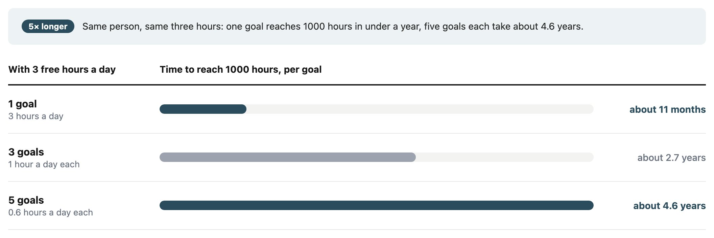

Most beginners believe that the more goals they practise each day, the more they will grow. I believed it too. Then I found that the right number of goals isn't a question of ambition, or of what fits on a screen. It depends on how many hours you have in a day.
I'm building an app called Time-Cost-Averaging. It borrows from dollar-cost averaging: invest a fixed amount every day and let the total grow, except the currency is time. My half-hour time log records everything but never adds anything up, so I can't see progress toward anything.
I gave the app three accounts, each with a 1000-hour goal: English words (2–3 hours a day), Writing (2–3 hours) and Fitness (dog walks, housework, short exercise: about 1 hour). Everything else is logged as "other". My reason: three accounts keep the big picture readable.
That's a fair design reason, but it tells a beginner nothing. "Keep your screen tidy" doesn't say how many goals you should choose.
My second answer felt deeper. I thought a skill only grows if you practise it for about three hours a day. Below that, your "mind muscle" never breaks and rebuilds. A beginner who splits three hours across five goals (words, writing, sketching, comics, vibe coding) would get nowhere.
The research didn't back me up. (A caveat for this and every study below: AI found these papers for me and I haven't read them myself, so treat them as leads rather than proof.)
remembered it about as well as people who revised 26 times, 14 days apart (Bahrick et al., 1993): half the sessions, spread further apart, did the same job. And how you practise matters: testing yourself beats re-reading by a wide margin (Karpicke & Roediger, 2008). Neither needs three hours in one day, so a short daily session isn't wasted.
al., 2018).
So the three-hour floor was wrong: short sessions do count. But whether your hours count is one question; how long until you see a result is another. The second one decides how many goals to run, and it depends on two things: a ceiling on how many hours one skill can absorb in a day, and the fixed pile of hours you have to split between goals.
Ericsson and colleagues (1993), the study behind the "10,000 hours" idea, found "essentially no benefit from durations exceeding 4 hr per day and reduced benefits from practice exceeding 2 hr". Those were elite performers, so I treat the numbers as a rough guide. But the shape matches my desk: useful practice in one skill appears to level off at around two to four hours a day. After two focused hours of words, I need a long break before the next round.
That's why I can run three accounts right now. I'm not working, so I have six to nine free hours. Poured into one skill, most of them would go past the point where it stops absorbing them. Spread across three, they get used.
Most beginners have one to three free hours, not six to nine. Below the ceiling, every extra goal just divides the same small pile of time. For a 1000-hour goal:

Same three hours of practice a day, very different calendar time: one goal reaches its finish line in under a year, while five goals each reach theirs four and a half years from now.
One objection: postmen learning to type got the most out of each hour at one hour a day (Baddeley & Longman, 1978). True, but that group also took four times as many weeks to finish. Efficiency per hour and calendar time to the finish line are different questions. And calendar time matters because most people quit while their progress is still too small to see; more on that in the section on the first three months.
The chart only counts hours. Those hours turn into skill only if they're spent with spaced review: coming back to old material at growing intervals instead of cramming and moving on.
For each new English word, I write a mnemonic sentence that leaves the word out but carries sound and meaning anchors back to it. A mnemonic like that speeds up learning but fades without recall practice (Chiu & Hawkins, 2023), and with the same total time, spreading practice out beats massing it (Lotfolahi & Salehi, 2017). Fifteen minutes of spaced review a day makes real progress; three hours without it can lose much of it. That doesn't make five fifteen-minute goals a good plan: spaced review decides whether the hours count, not how soon they add up. Each of those goals would still take years to reach 1000 hours.
Many new gym members quit before their third month (Sperandei et al., 2016), and "no time or energy" is among the most common reasons (Gjestvang et al., 2020).
My own pattern is a U shape. Month one is exciting. Month two is the plateau: the novelty is gone and progress is hard to see. Month three is when progress begins to show. That's my experience, not a law, but the plateau is where I've quit before.
Spread a few hours across five goals and none may show visible progress before the plateau hits. Put them into one and track it, and the balance grows fast enough to notice. Seeing progress tends to help people keep going (Harkin et al., 2016).
Not three because three looks nice. Count your free hours first.
you have hours left over past the point where the first stops absorbing them.
1000 hours is a milestone, not a guarantee; practice explains only part of why people differ in skill (Macnamara et al., 2014). What one account gives you is a balance you can see early: by the end of month three, about 270 hours in one account, against about 54 in each of five. That gap may decide whether you're still practising after month three.
I haven't read these papers myself. AI found them for me when I looked for research on this argument, so check the original before you cite one.
training session on the rate of learning to type](https://doi.org/10.1080/00140137808931764). Ergonomics, 21(8), 627–635.
of foreign language vocabulary and the spacing effect](https://doi.org/10.1111/j.1467-9280.1993.tb00571.x). Psychological Science, 4(5), 316–321.
mnemonic with retrieval practice on L2 vocabulary learning in Taiwanese EFL classes](https://doi.org/10.23971/jefl.v13i2.6313). Journal on English as a Foreign Language, 13(2), 452–474.
muscle hypertrophy through resistance training: the role of muscle damage and muscle protein synthesis](https://doi.org/10.1007/s00421-017-3792-9). European Journal of Applied Physiology, 118(3), 485–500.
practice in the acquisition of expert performance](https://doi.org/10.1037/0033-295X.100.3.363). Psychological Review, 100(3), 363–406.
barriers to initiation and sustained exercise adherence in a fitness club setting—A one-year follow-up study](https://doi.org/10.1111/sms.13736). Scandinavian Journal of Medicine & Science in Sports, 30(9), 1796–1805.
Y., & Sheeran, P. (2016). Does monitoring goal progress promote goal attainment? A meta-analysis of the experimental evidence. Psychological Bulletin, 142(2), 198–229.
learning](https://doi.org/10.1126/science.1152408). Science, 319(5865), 966–968.
EFL learners in focus](https://doi.org/10.1080/2331186X.2017.1287391). Cogent Education, 4(1), 1287391.
performance in music, games, sports, education, and professions: A meta-analysis](https://doi.org/10.1177/0956797614535810). Psychological Science, 25(8), 1608–1618.
an unsupervised setting: Explanatory variables for high attrition rates among fitness center members](https://doi.org/10.1016/j.jsams.2015.12.522). Journal of Science and Medicine in Sport, 19(11), 916–920.